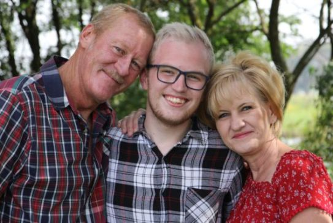

Daniel Henning (*1999)
Voorgeslagte
|
Nageslagte
|
Foto(s)
Genealogiese no.
a2.b1.c6.d8.e8.f6.g2.h1.
Voorname
Daniel
Van
Henning
Geslag
Manlik
Vader
Johannes Stephanus Henning
Moeder
Mathilda Elizabeth Van Wyk
# ste kind van vader
1
Noemnaam
Daniel
Geboortedatum
1999-9-28
Geboorteplek
Vanderbijlpark
Doopdatum
Doopplek
Sterfdatum
Sterfplek
Voorgeslagte van Daniel Henning (*1999)
Generasies
2
3
4
5
6
/¯¯
Johannes Stephanus Henning (*1814, †1875)
/¯¯
Frederik Johannes Henning (*1847, †1938)
\__
Maria Catharina Botha (*1819, †1850)
/¯¯
Johannes Stephanus Henning (*1909, †1971)
\__
Maggel Maria Coetzer
/¯¯
Daniël Albertus Cornelius Henning (*1943, †1996)
\__
Aletta Johanna Hoffman (*1913, †1981)
/¯¯
Johannes Stephanus Henning (*1969)
/¯¯
Pieter Hendrik Henning (*1852, †1919)
/¯¯
Casper Jan Hendrik Henning (*1872, †1942)
\__
Francina Jacoba Magdalena Du Plooy (*1855, †1911)
/¯¯
Pieter Hendrik Henning (*1894, †1973)
\__
Alida Hendrina Margaretha Pelser (*1873, †1956)
\__
Alida Hendrina Magrieta Henning (*1945, †2021)
\__
Hendrina Jacoba Du Preez (*1907, †1993)
Daniel Henning (*1999)
/¯¯
Andries Jacobus Van Wyk (*1929)
\__
Mathilda Elizabeth Van Wyk (*1967)
\__
Wilhelmina Johanna Mathilda Breedt (*1938)
Fotos

a2.b1.c6.d8.e8.f6.g2. Johannes Stephanus Henning *4-8-1969, sy vrou, Mathilda Elizabeth (gebore Van Wyk) *27-3-1967 en hul seun, Daniel *28-9-1999
Beskou lys van mense op foto
Daniel Henning
Johannes Stephanus Henning
Mathilda Elizabeth Van Wyk